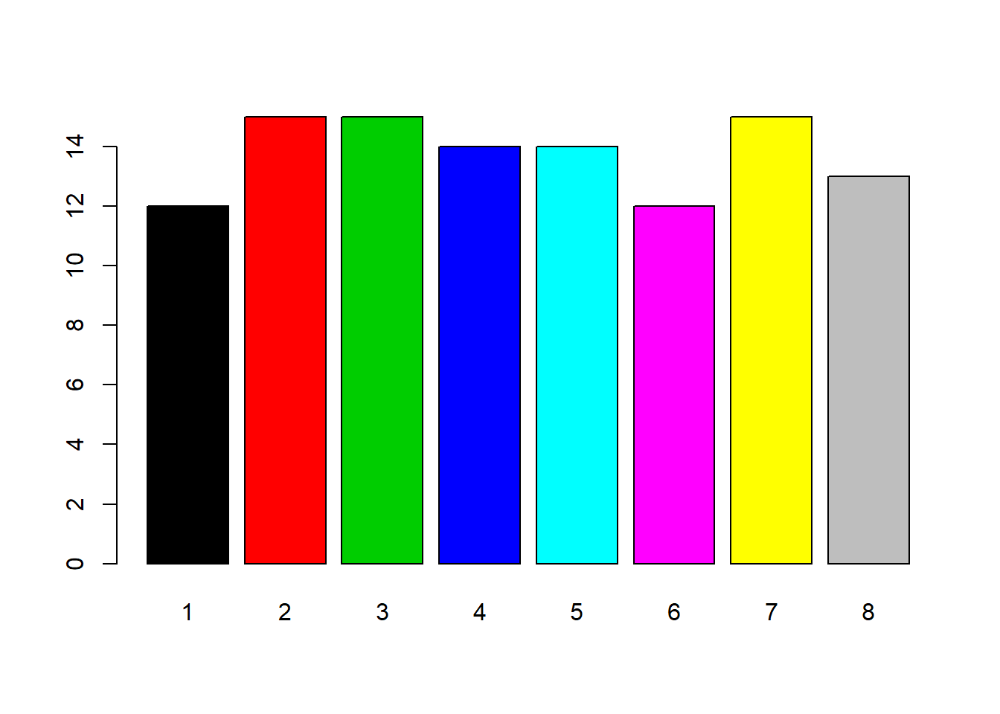
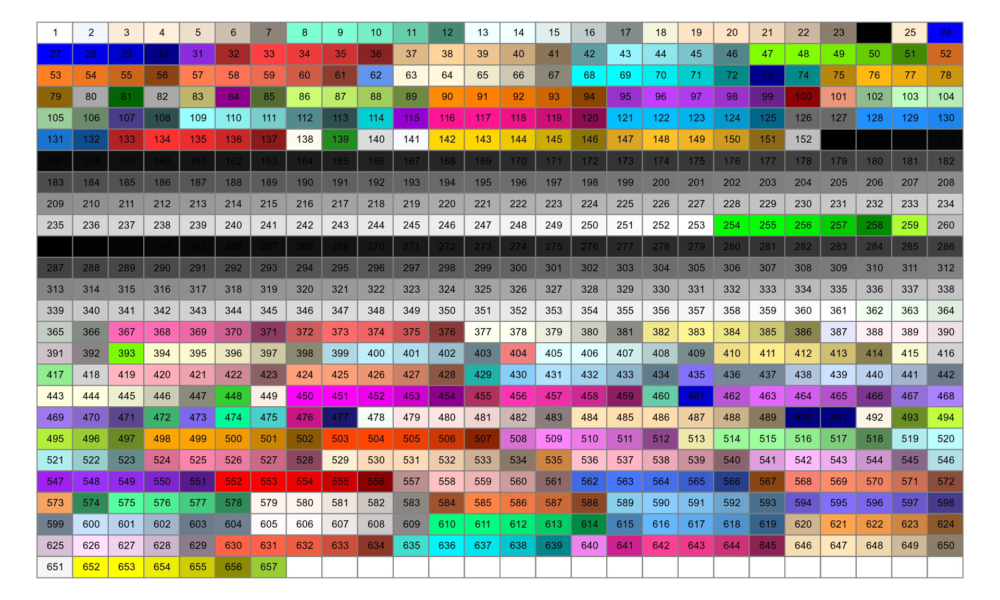
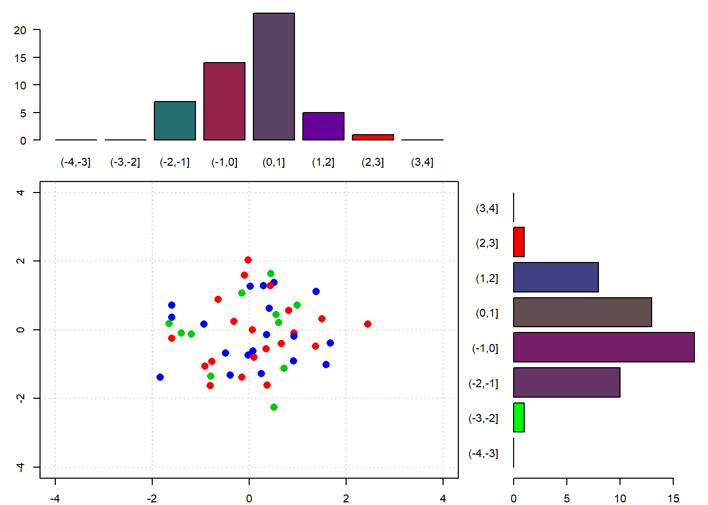
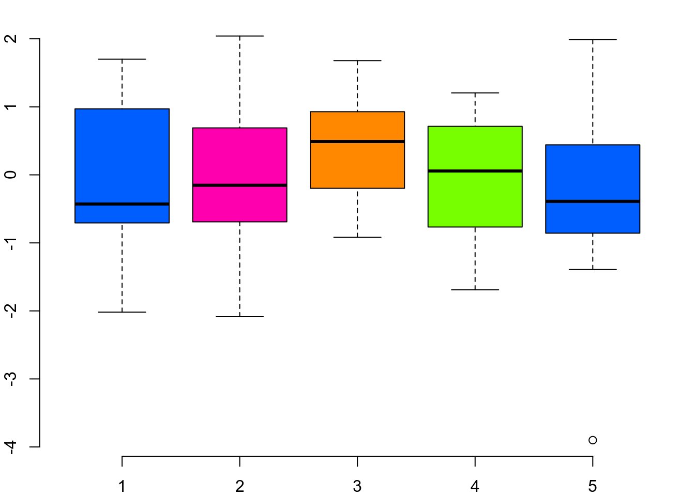
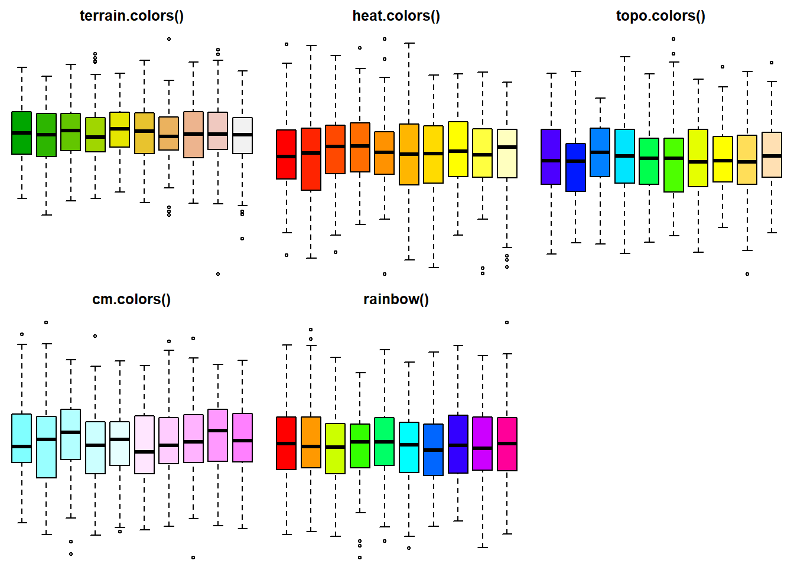
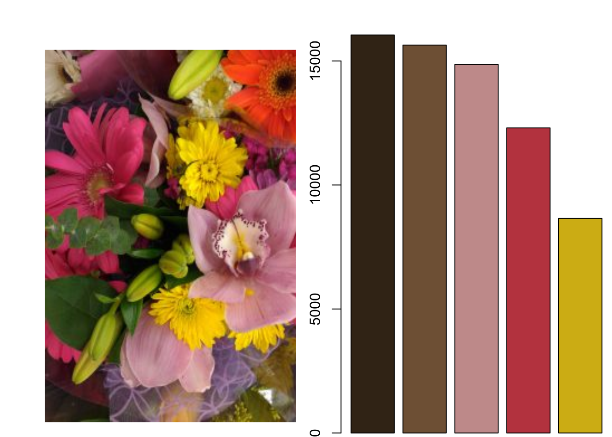
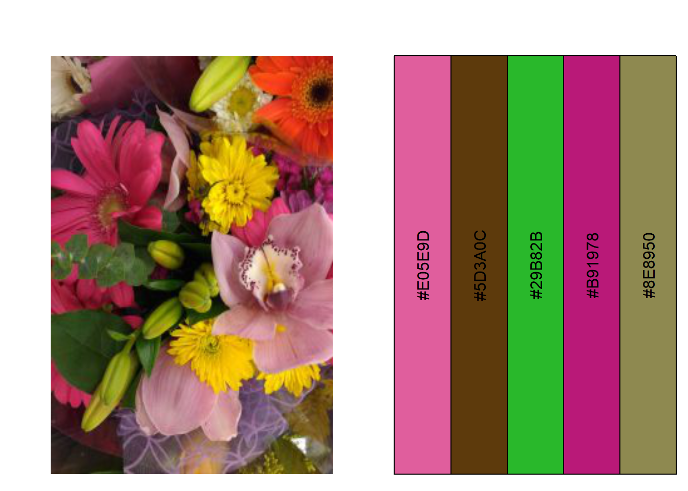
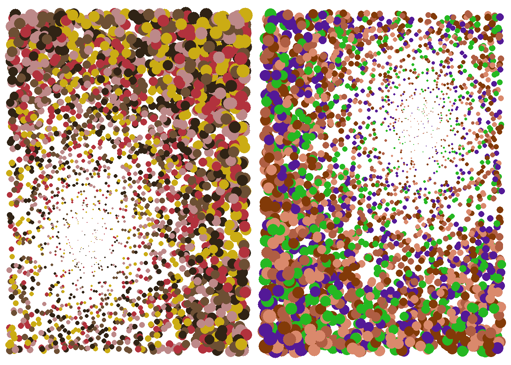

12 La gestion des couleurs
Nous avons vu différentes manières d’utiliser les couleurs : avec leur nom (e.g., "salmon"), avec un numéro de 1 à 8, avec la fonction rgb() (pour “red”, “green”, “blue”), et avec la fonction colors(). Il en existe d’autres mais celles-ci sont les principales.
L’utilisation des numéros de 1 à 8 correspond au noir, rouge, vert, bleu, cyan, magenta, jaune et gris. Cette utilisation est pratique pour visualiser rapidement nos résultats mais donne globalement des graphiques visuellement moyens. Ces couleurs sont plutôt à éviter pour communiquer nos graphiques.

12.1 colors()
Pour choisir des couleurs plus agréables et mettant plus en avant nos résultats, une option consiste à les choisir dans la liste des couleurs pré-enregistrées dans R. Nous pouvons accéder à la liste des couleurs avec la fonction colors()
## [1] "white" "aliceblue" "antiquewhite" "antiquewhite1"
## [5] "antiquewhite2" "antiquewhite3" "antiquewhite4" "aquamarine"
## [9] "aquamarine1" "aquamarine2" "aquamarine3" "aquamarine4"
## [13] "azure" "azure1" "azure2" "azure3"
## [17] "azure4" "beige" "bisque" "bisque1"Nous pouvons utiliser ces couleurs avec leur nom (e.g., “white”, “azure3”), ou alors avec leur numéro (e.g., “white” = colors()[1], “azure3” = colors()[16]).
# adapted from http://www.r-graph-gallery.com/42-colors-names/
op <- par(no.readonly = TRUE)
par(mar = c(0, 0, 0, 0))
plot(0, type = "n", xlim = c(0, 1), ylim = c(0, 1),
axes = FALSE, xlab = "", ylab = "")
numRow <- 26
numCol <- 26
rect(
xleft = rep((0:(numCol - 1)/numCol), numRow),
ybottom = sort(rep((0:(numRow - 1)/numRow),numCol), decreasing = TRUE),
xright = rep((1:numCol/numCol), numRow),
ytop = sort(rep((1:numRow/numRow), numCol), decreasing = TRUE),
border = grey(0.5),
col = colors()[seq(1, numRow*numCol)])
myLabels <- c(as.character(1:657), rep("", numRow*numCol - 657))
text(
x = rep((0:(numCol - 1)/numCol), numRow) + 0.02,
y = sort(rep((0:(numRow - 1)/numRow), numCol), decreasing = TRUE) + 0.02,
labels = myLabels,
cex = 0.6)
12.2 rgb()
Une autre option consiste à construire ses propres couleurs ave la fonction rgb() qui prend comme argument la quantité de rouge, de de vert, et de bleu. Par défaut ces valeurs sont comprises entre 0 et 1. Ce réglage par défaut peut être modifié avec l’arguement maxColorValue pour par exemple avoir des valeurs entre 0 et 255 (maxColorValue = 255 ; norme pour la représentation des couleurs RGB).
Nous allons reprendre notre fonction permettant de représenter la distribution de points dans un nuage de points au moyen de barplot avec cette fois trois couleurs de points (rouge, vert, bleu), et des barplot dont la couleur correspondra à la quantité de chaque couleur avec la fonction rgb().
graphBarplotCol <- function(n){
myX <- rnorm(n)
myY <- rnorm(n)
myCol <- c(2, 3, 4, sample(2:4, size = (n - 3), replace = TRUE))
myYCut <- cut(myY, breaks = -4:4)
myXCut <- cut(myX, breaks = -4:4)
myYCutCol <- table(myCol, myYCut)
myXCutCol <- table(myCol, myXCut)
rColX <- myXCutCol[1,] / (myXCutCol[1,] + myXCutCol[2,] +
myXCutCol[3,])
gColX <- myXCutCol[2,] / (myXCutCol[1,] + myXCutCol[2,] +
myXCutCol[3,])
bColX <- myXCutCol[3,] / (myXCutCol[1,] + myXCutCol[2,] +
myXCutCol[3,])
rColX[is.na(rColX)] <- 0
gColX[is.na(gColX)] <- 0
bColX[is.na(bColX)] <- 0
rColY <- myYCutCol[1,] / (myYCutCol[1,] + myYCutCol[2,] +
myYCutCol[3,])
gColY <- myYCutCol[2,] / (myYCutCol[1,] + myYCutCol[2,] +
myYCutCol[3,])
bColY <- myYCutCol[3,] / (myYCutCol[1,] + myYCutCol[2,] +
myYCutCol[3,])
rColY[is.na(rColY)] <- 0
gColY[is.na(gColY)] <- 0
bColY[is.na(bColY)] <- 0
op <- par(no.readonly = TRUE)
par(mar = c(2, 3, 1, 1))
layout(matrix(c(1, 1, 0,
2, 2, 3,
2, 2, 3), ncol = 3, byrow = TRUE))
barplot(table(myXCut), las = 1, col = rgb(rColX, gColX, bColX))
plot(x = myX, y = myY, col = myCol, pch = 16,
xlim = c(-4, 4), ylim = c(-4, 4), cex = 1.5,
panel.first = grid())
barplot(table(myYCut), las = 1, horiz = TRUE,
col = rgb(rColY, gColY, bColY))
par(op)
}
graphBarplotCol(n = 50)
Avec la fonction rgb() nous pouvons donc représenter 256^3 couleurs, soit 167 777 216 couleurs différentes. Notre objectif reste cependant de faire des graphiques agréables à lire et qui mettent bien en valeurs nos résultats scientifiques. Il faut donc choisir les couleurs adéquates au regard de notre objectif. C’est pour cela que nous allons utiliser des palettes.
12.3 Palettes
Les palettes sont des jeux de couleurs représentées sous forme d’un vector avec les couleurs au format hexadécimal (valeur renvoyée par la fonction rgb() par exemple).
myPal <- c(
rgb(0, 94, 255, maxColorValue = 255),
rgb(255, 0, 174, maxColorValue = 255),
rgb(255, 136, 0, maxColorValue = 255),
rgb(119, 255, 0, maxColorValue = 255))
print(myPal)## [1] "#005EFF" "#FF00AE" "#FF8800" "#77FF00"
Il existe des palettes inclues dans R : terrain.colors(), heat.colors(), topo.colors(),
cm.colors(), rainbow().
op <- par(no.readonly = TRUE)
par(mfrow = c(2, 3), mar = c(0, 0, 2, 0))
boxplot(matrix(rnorm(1000), ncol = 10), main = "terrain.colors()",
col = terrain.colors(10), axes = FALSE)
boxplot(matrix(rnorm(1000), ncol = 10), main = "heat.colors()",
col = heat.colors(10), axes = FALSE)
boxplot(matrix(rnorm(1000), ncol = 10), main = "topo.colors()",
col = topo.colors(10), axes = FALSE)
boxplot(matrix(rnorm(1000), ncol = 10), main = "cm.colors()",
col = cm.colors(10), axes = FALSE)
boxplot(matrix(rnorm(1000), ncol = 10), main = "rainbow()",
col = rainbow(10), axes = FALSE)
par(op)
Il existe aussi une fonction colorRampPalette() qui permet de créer un dégradé de couleur.
op <- par(no.readonly = TRUE)
par(mfrow = c(3, 1), mar = c(0, 0, 0, 0))
boxplot(matrix(rnorm(2500), ncol = 25),
col = colorRampPalette(c('blue', 'red'))(25), axes = FALSE)
boxplot(matrix(rnorm(2500), ncol = 25),
col = colorRampPalette(c('blue', 'white', 'red'))(25), axes = FALSE)
boxplot(matrix(rnorm(2500), ncol = 25),
col = colorRampPalette(c(rgb(255, 136, 0, maxColorValue = 255),
rgb(0, 94, 255, maxColorValue = 255)))(25), axes = FALSE)
Nous pouvons aussi créer nos propres palettes en utilisant des sites web dédiés à la sélection des couleurs comme http://paletton.com/ ou https://coolors.co/ (il en existe bien d’autres), puis les utiliser dans R en recopiant dans un vecteur les valeurs héxadécimales ou rgb.
R est un language de programmation très puissant. Nous pouvons imaginer de nombreuses façons de créer automatiquement des palettes en fonction de critères variés. Par exemple nous pouvons importer une image dont les teintes nous semblent pertinentes, puis extraire les informations de chacun des points pour ensuite sélectionner les couleurs dominantes via un regroupement par cluster. C’est ce que fait la fonction suivante.
Tout d’abord nous allons charger les packages raster, rgdal et jpeg qui vont nous servir à manipuler notre image sous R.
pkgCheck <- function(x){
if (!require(x, character.only = TRUE)){
install.packages(x, dependencies = TRUE)
if(!require(x, character.only = TRUE)) {
stop()
}
}
}
pkgCheck("raster")## Loading required package: raster## Loading required package: sp## Loading required package: rgdal## rgdal: version: 1.4-8, (SVN revision 845)
## Geospatial Data Abstraction Library extensions to R successfully loaded
## Loaded GDAL runtime: GDAL 2.2.3, released 2017/11/20
## Path to GDAL shared files: C:/Users/nous/Documents/R/win-library/3.6/rgdal/gdal
## GDAL binary built with GEOS: TRUE
## Loaded PROJ.4 runtime: Rel. 4.9.3, 15 August 2016, [PJ_VERSION: 493]
## Path to PROJ.4 shared files: C:/Users/nous/Documents/R/win-library/3.6/rgdal/proj
## Linking to sp version: 1.3-2## Loading required package: jpegEnsuite nous allons utiliser la fonction kmeans() pour effectuer des groupes de couleurs en utilisant les valeurs RGB de chacun des points de notre image. Ici nous avons deux méthodes possibles, la première utilise la fonction kmeans() pour les trois valeurs RGB, et la seconde utilise la fonction kmeans() pour chaque valeur RGB individuellement (cette seconde fonction donne une palette qui pourra être assez éloignée des couleurs de l’image de départ).
createPal <- function(photo, met = 1, graph = TRUE, k = 9){
if(met == 1){
colR <- getValues(raster(photo, band = 1))
colG <- getValues(raster(photo, band = 2))
colB <- getValues(raster(photo, band = 3))
kMeans <- kmeans(data.frame(colR, colG, colB), centers = k)
kCol <- rgb(kMeans$centers, maxColorValue = 255)[order(table(
kMeans$cluster), decreasing = TRUE)]
if(graph == TRUE){
op <- par(no.readonly = TRUE)
par(mfrow = c (1, 2), mar = c(0, 2, 2, 0))
myJpg <- readJPEG("./myFiles/photoKmeans.jpg", native = TRUE)
plot(0:1, 0:1, type = "n", ann = FALSE, axes = FALSE)
rasterImage(myJpg, 0, 0, 1, 1)
barplot(table(kMeans$cluster)[order(table(kMeans$cluster),
decreasing = TRUE)], col = kCol, names.arg = NA)
par(op)
}
return(kCol)
} else {
if(met == 2){
kColR <- kmeans(x = getValues(raster(photo, band = 1)),
centers = k)
kColG <- kmeans(x = getValues(raster(photo, band = 2)),
centers = k)
kColB <- kmeans(x = getValues(raster(photo, band = 3)),
centers = k)
kCol <- (rgb(kColR$centers, kColG$centers, kColB$centers,
maxColorValue = 255))
if(graph == TRUE){
op <- par(no.readonly = TRUE)
par(mfrow = c (1, 2), mar = c(0, 2, 2, 0))
myJpg <- readJPEG("./myFiles/photoKmeans.jpg", native = TRUE)
plot(0:1, 0:1, type = "n", ann = FALSE, axes = FALSE)
rasterImage(myJpg, 0, 0, 1, 1)
# par(mar = c(0, 0, 0, 0))
plot(x = 1:k, y = rep(1, k), ylim = c(0, 1),
xlim = c(0, k), axes = FALSE, xlab = "",
ylab = "", type = "n")
for(i in 1:k){
polygon(x = c(i-1, i, i, i-1), y = c(0, 0, 1, 1),
col = kCol[i])
text(x = i - 0.5, y = 0.5,
labels = as.character(kCol[i]), srt = 90)
}
par(op)
}
return(kCol)
} else {
print(paste0("No method ", met, "."))
return(rgb(0, 0, 0))
}
}
}
myPalMet1 <- createPal(photo = "./myFiles/photoKmeans.jpg",
met = 1, graph = TRUE, k = 5)

La fonction nous renvoie les couleurs de la palette avec un graphique en barres représentant le nombre de points de l’image dans chacun des groupes de couleurs. Nous pouvons désormais utiliser notre nouvelle palette pour réaliser nos graphiques.
makeImpact <- function(myPal, numP = 300, impact = 0.33, multCex = 3){
myX <- sample(0:1000, size = numP, replace = TRUE)/1000
myY <- sample(0:1000, size = numP, replace = TRUE)/1000
distImpact <- sqrt((myX - impact)^2 + (myY - impact)^2)
dfXY <- data.frame(myX, myY, distImpact)
plot(x = dfXY$myX, y = dfXY$myY, axes = FALSE,
xlab = "", ylab = "", cex = dfXY$distImpact*multCex,
col = myPal, pch = 16)
}
op <- par(no.readonly = TRUE)
par(mfrow = c (1, 2), mar = c(0, 0, 0, 0))
makeImpact(myPal = myPalMet1, numP = 3000, impact = 0.33)
makeImpact(myPal = myPalMet2, numP = 3000, impact = 0.66)
12.4 Conclusion
Félicitations ! C’est la fin de ce chapitre sur la gestion des couleurs. Nous savons désormais comment utiliser les couleurs et les palettes, et comment guider le choix des couleurs pour mettre en valeur nos résultats. Dans le prochain chapitre nous allons voir quelques exemples de packages graphiques et les dernières tendances comme les graphiques dynamiques.